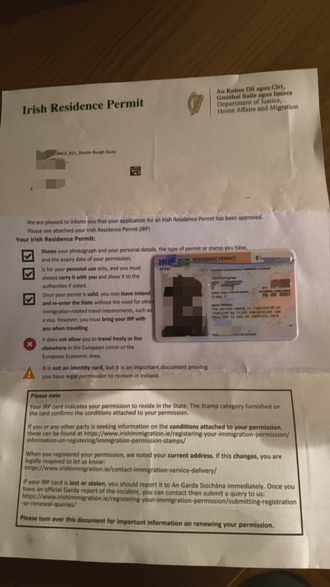
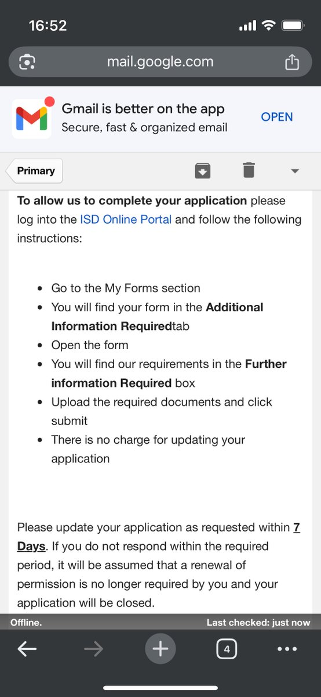

Catherina（赛博咬人黑猫）
@CatherinaMeow
@GBU24PavewayIII az 揉揉云雀老师qwq


雲雀AIM-54C+
@GBU24PavewayIII
我人都回国了然后今天原室友和我说我的IRP居留卡成功下来了？？？？
打开邮件看依旧没有通知我申请成功或失败或者已经发出卡片的邮件，只有几周前通知让我补材料但是我压根没搭理的邮件，这完全不符合流程啊
我工作辞了房子退了车子卖了，把所有的东西能扔的扔，其他都带回来了，INIS你是有什么毛病？ https://t.co/Mktl3HUlsl